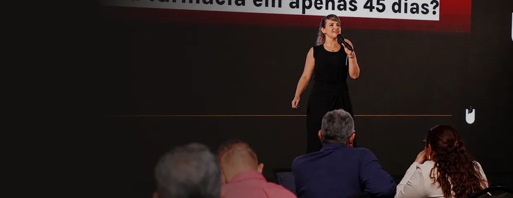
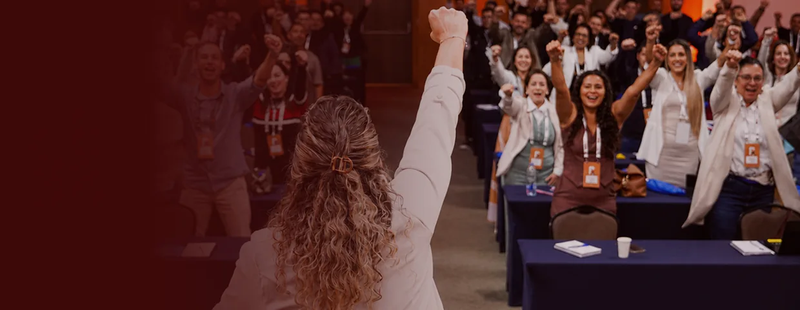

O dono é o gargalo
Tudo passa por ele, e nada anda quando ele não está na loja.
Liderança consistente no varejo farmacêutico
Mentorias, formações e treinamentos construídos a partir do Método WFA — Wolf Farma Alfa, criado para transformar liderança em processos claros, execução e resultado.
anos dentro do varejo farmacêutico, da operação à gestão
contratos simultâneos conduzidos em uma operação de consultoria
especialistas liderados por meio de sete líderes de setor
pilares que sustentam o Método WFA — Wolf Farma Alfa
Problemas que parecem ser de venda, de equipe ou de mercado. Na raiz, são de liderança e estrutura de gestão.
Tudo passa por ele, e nada anda quando ele não está na loja.
Cada um faz do seu jeito, e o resultado oscila junto.
Os indicadores existem no sistema, mas ninguém usa para decidir no dia a dia.
Promovidos por tempo de casa, sem nunca terem sido preparados para liderar.
O faturamento subiu, a complexidade dobrou, e a gestão continuou a mesma.
Conteúdo de prateleira que não conversa com a realidade do balcão.
Farmácia não quebra por faltaCinthya Lobo
de venda. Quebra por falta de
gestão e de liderança preparada.
Três pilares para desenvolver uma liderança consistente na farmácia. Eles norteiam os processos e fazem o aprendizado virar execução e resultado na loja.
Preparar quem conduz a equipe para comunicar, orientar, cobrar, delegar e desenvolver pessoas.
Organizar rotinas, responsabilidades e ferramentas para que a equipe saiba como agir e decidir.
Transformar o plano em rotina, acompanhar o que foi combinado e sustentar os resultados.
Todas nascem do mesmo método. O que muda é a profundidade, o formato e quem está na sala.
Acompanhamento próximo para proprietários, gestores e líderes que querem desenvolver uma liderança consistente, com encontros on-line ao vivo e direcionamento sobre a realidade da sua farmácia.
Capacitações para equipes, farmácias, redes e grupos, em formatos abertos ou personalizados, construídos a partir do contexto e dos indicadores de quem contrata.

Formação prática de 12 horas, construída a partir do Método WFA e oferecida nos formatos on-line e presencial para quem lidera — ou vai liderar — uma equipe de farmácia.

Curso contratado por redes para preparar consultores que orientam farmácias com visão integrada do negócio e repertório prático para apoiar cada operação.

Soluções para quem precisa desenvolver líderes consistentes — em uma loja, em grupos regionais ou em operações com centenas de unidades.
O conteúdo e o formato são adaptados ao porte, ao público e ao contexto de cada operação.
Sou farmacêutica e construí mais de 20 anos de carreira no varejo farmacêutico, do balcão à gestão e à liderança de equipes. Como proprietária e responsável técnica, vivi por 12 anos a operação por dentro — com seus desafios comerciais, sanitários, fiscais e humanos.
Na consultoria, liderei 27 especialistas por meio de sete líderes de setor e participei da expansão de uma carteira para 400 contratos simultâneos, com NPS médio de 9,5. Também respondi por uma unidade de negócio com faturamento anual de R$ 12 milhões.
Dessa experiência nasceu o Método WFA — Wolf Farma Alfa, estruturado em Líder, Protocolos e Tecnologia e Execução para desenvolver uma liderança consistente dentro da farmácia.
Próximas turmas do Essencial Líder Farma e da Mentoria em Grupo Wolf Farma Alfa.

12 horas de formação prática para quem conduz ou vai conduzir uma equipe de farmácia.
24 de outubro de 2026 · Goiânia, GO Solicitar informações
12 horas em quatro encontros ao vivo, das 19h às 22h, distribuídos em três semanas.
13, 20, 22 e 27 de outubro de 2026 Solicitar informações
Encontros on-line ao vivo, semanais, durante quatro meses. Novas turmas a cada trimestre.
Próxima turma em novembro de 2026 Solicitar informaçõesA Cinthya trouxe aspectos que eu ainda não tinha acessado em outros cursos. De um jeito simples e direto, ajudou a minha filial e a mim como gerente: orientação da equipe, feedback e melhora nos indicadores. Recomendo de coração.
Rafael Pereira Batista Gerente de rede farmacêuticaCada aula era um aprendizado novo. Aprendi sobre liderança, gestão de pessoas, indicadores e comunicação. Hoje minha equipe trabalha de forma muito mais organizada, cada um sabe o seu papel e eu passei a liderar com muito mais segurança.
Participante da Mentoria Wolf Farma Gerente de farmácia